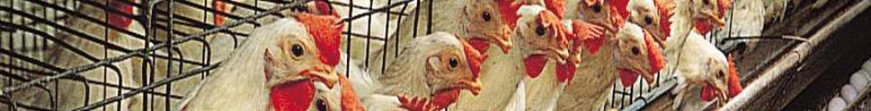

Youth in Agriculture & Rural Development (YARD) serves youth, between the ages of 14 to 35 years old, who live in rural and similarly under-developed areas and are impoverished due to lack of development support resources and opportunities to improve their lives. The vast majority of our beneficiaries have not progressed beyond grade 8. Although their standard of education is low, their identification with the land and its natural resources is strongly rooted in their spirits. With government and other stakeholders, they see our rich natural heritage as a means of improving their livelihoods. They are keen to learn, open to interact with anyone who will genuinely help progress them, and have the potential to improve on productivity in many areas of endeavours; which is why they interact with The YARD Agency. They ultimately drive The YARD Agency to help them contribute to their regional economies and ultimately to a more prosperous nation.
STAKE-HOLDERS & PARTNERS